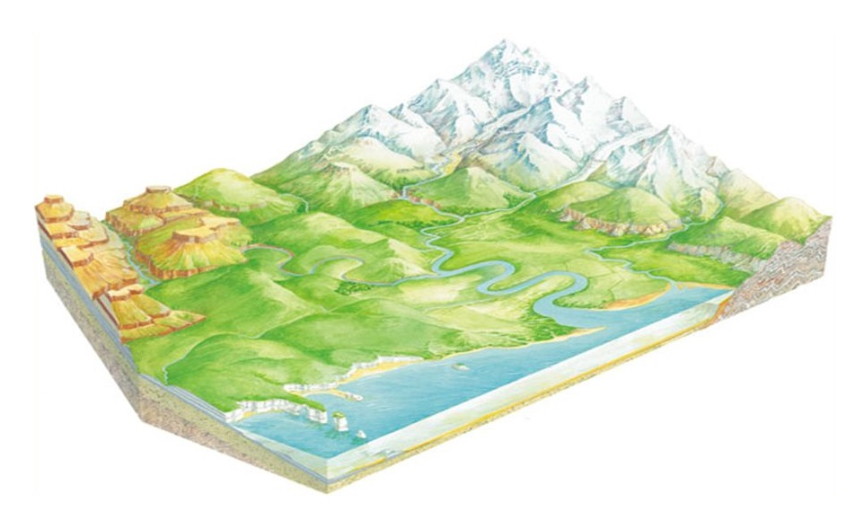

l
o
a
d
i
n
g
.
.
.


Több millió faj, köztük az ember élőhelye is. A Föld a világegyetem egyetlen olyan bolygója, amelyről tudjuk, hogy életet hordoz. Jelenlegi ismereteink szerint 4,44–4,54 milliárd éve alakult ki, és a felszínén mintegy egy milliárd év múlva az élet is megjelent. Azóta a bioszféra jelentősen megváltoztatta az atmoszférát, és más, biotikus összetevőit. Ezzel lehetőség nyílt az aerob organizmusok osztódásos szaporodására, és létrejött az ózonréteg, amely megszűri a Nap felől érkező ultraibolya sugárzást. A Föld felszínét a Föld mágneses mezője védi a nagyenergiájú kozmikus sugárzástól.
A Föld felszíne rendkívül változatos domborzati formákat hordoz. A felszín közel 71%-át víz borítja, a további 29%-ot szárazföldnek nevezzük. A kéreg víz alatti teteje hasonlóan tagolt, mint a szárazföldek felszíne: hegyek, hegyláncok, árkok, síkságok váltogatják egymást mindkettőnél. Bolygónk felszíne a vulkáni tevékenység, a lemeztektonika és az erózió miatt folyamatosan átalakul, igaz ebben a folyamatban több ezer, vagy akár több millió év alatt mutatkoznak meg a változások. A földfelszínt az óceánok és kontinensek dominanciája szerint is két félgömbre lehet osztani, az óceáni félgömbre és a szárazföldi félgömbre.
A földkéreg Földünk legkülső kőzetburka. Halmazállapota szilárd, magmás, metamorf vagy üledékes kőzetekből épül fel.
Vastagsága átlagosan 30–40 km, bár rendkívül tág határok között változik: az óceánok alatt 6–7 km, a szárazföldek területén pedig 35 km, ám néhol eléri a 70 km-t is.
A földköpeny a földmagot beburkoló vastag, mintegy 2900 km széles rendkívül magas viszkozitású, helyenként szilárd réteg.
Alsó határa a külső földmaggal, felső határa pedig a földkéreggel kapcsolja össze. A kéreg és a köpeny határát az ún.
Mohorovičić diszkontinuitás jelöli ki, egy határ, amely alatt a földrengéshullámok sebessége ugrásszerűen megnövekszik.
A Föld legbelső szerkezeti egysége, a legbelső gömbhéj a földmag. Ahogy a magot körülvevő köpeny,
így ez is két viszonylag önálló részre osztható: a külső magra és a belső magra.
Szeizmikus vizsgálatok szerint a belső mag
nagyjából 1220 km földsugárig, a külső mag pedig további közel 2300 kilométerig terjed. A külső mag folyadékszerűen viselkedik,
a belső mag szilárd, mindkettő fő alkotóelemei nehézfémek, elsősorban vas és kisebb mennyiségben nikkel. A szilárd belső mag
létezését 1936-ban fedezte fel Inge Lehmann.
A légkört alkotó gázokat gyűjtőnéven levegőnek nevezzük. A levegő 78,08% nitrogénből, 20,95% oxigénből, 0,93% argonból, 0,038% szén-dioxidból, továbbá vízpárából és nyomokban hidrogénből, héliumból és más nemesgázokból tevődik össze. A gázokon és a vízpárán kívül más anyagok is találhatóak a légkörben, amelyek egy része természetes, más része mesterséges, az ember tevékenységei által a levegőbe juttatott szennyezőanyag. A természetes légköri anyagok a por, a pollenek, vulkáni por és hamu és a meteoroidok. A mesterséges anyagok a gyárak és a közlekedés által a légkörbe bocsátott por, klór, fluor, higany, kén stb.